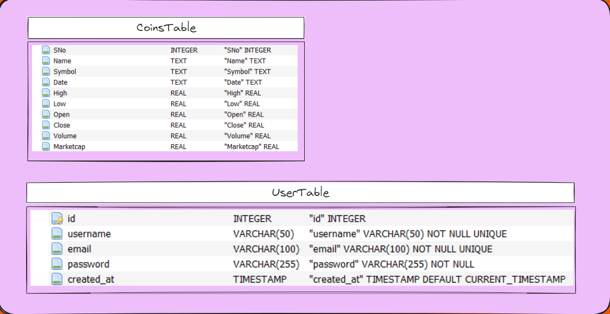
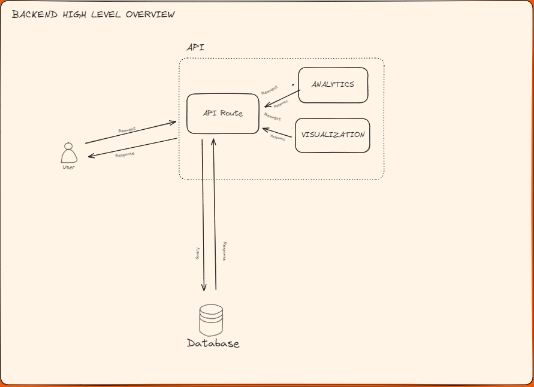
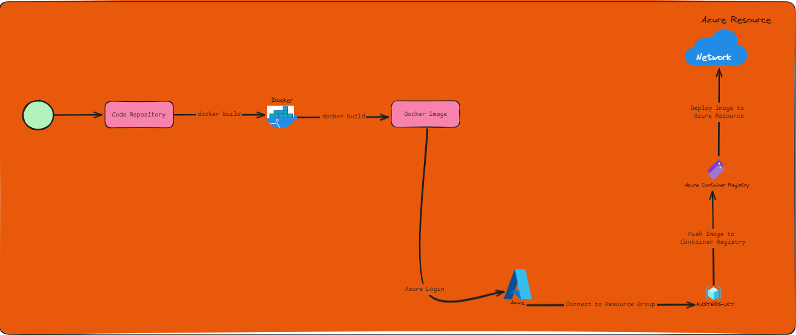

Components
Database Architecture
The database design is centered around two primary tables:
- The Coins table
- The Users table
The Coins table stores essential information about various cryptocurrencies, including their names, symbols, and historical data. The Users table manages user authentication and stores sign-in credentials, ensuring secure access to the application. This design enables efficient data management and supports the core functionalities of the crypto financial dashboard.
The image below shows the structure of the two tables that are used in the project architecture.

Backend Architecture
The API serves as the bridge between the frontend and the database, built using FastAPI, a modern web framework for creating APIs with Python. It manages data processing, business logic, and database interactions, offering endpoints for data retrieval, updates, and analytical operations. The API is containerized and deployed on Azure Container Instances, facilitating easy scaling and management.
Architecture Diagram

Example Process Flow
API Request/Route
- Example:
http://127.0.0.1:8000/moving_averages?coin_name=Bitcoin&coin_name=Cardano
When a user requests moving averages for specific coins from the frontend, an API request is sent to the corresponding route. The API then queries the database for the relevant data, processes it through the analytics and visualization modules, and finally returns a JSON response containing the transaction status, message, and processed data.
Database SQL Request
- Example:
SELECT * FROM CoinsTable WHERE NAME IN ('Bitcoin', 'Cardano')
Within the API route, a dynamic SQL query is generated based on the client’s request to fetch data from the database. The retrieved data is loaded into a Pandas DataFrame, which is then passed to the analytics module for further processing.
Analytics Request
- Example:
moving_average(df: pd.DataFrame, window: int = 5) -> pd.DataFrame
The analytics module processes the DataFrame, applying the requested analytical function—such as calculating moving averages. Once the computation is complete, the DataFrame is returned, ready for visualization.
Visualization Request
- Example:
plot_line(df: pd.DataFrame, x_column_name: str, y_column_name: str) -> go.Figure
The visualization module contains generic functions for generating various plots. After the data is processed by the analytics module, it is passed to the visualization module, along with the necessary columns and metadata. The visualization function returns a Plotly figure object, which is converted to JSON and included in the API response.
API Response
- Example:
{"transaction_state": 200, "figure_data": {...}}
After all processing is complete, the API sends a response to the frontend, including the transaction status and the visualized data, ready for display.
Frontend Architecture
The frontend of our crypto financial dashboard is built using Vue.js, a progressive JavaScript framework that facilitates the creation of dynamic and interactive web applications. The architecture of the frontend is designed to ensure a seamless and responsive user experience, focusing on modularity, reusability, and efficient data handling.
Key Components
Component-Based Structure
- The frontend is organized into a series of reusable Vue components. Each component is responsible for a specific part of the user interface, such as charts, tables, and forms. This modular approach allows for easier maintenance and scalability.
- Common components include:
- Dashboard Component: The main view that displays various financial metrics, trends, and visualizations.
- Chart Components: Custom components that render different types of charts (e.g., line charts, bar charts) using libraries like Plotly or Chart.js.
- Data Table Components: Components that display tabular data with features like sorting, filtering, and pagination.
- Form Components: Components that handle user inputs for searching, filtering, or submitting data.
State Management
- The application state is managed using Vuex, Vue's centralized state management library. Vuex allows us to store and manage the application's global state, such as user authentication, selected cryptocurrencies, and chart data.
- State management is crucial for ensuring consistency across different components and maintaining the application's responsiveness.
Routing
- Vue Router is used to manage navigation within the dashboard. It allows users to switch between different views (e.g., dashboard, analytics, settings) without reloading the page.
- The routing structure is designed to be intuitive, with clear paths and dynamic routing for accessing specific data points or visualizations.
Data Handling and API Integration
- The frontend communicates with the backend via RESTful API calls to fetch real-time cryptocurrency data, historical trends, and other financial metrics.
- Axios is used for making HTTP requests, ensuring smooth data retrieval and error handling.
- Data retrieved from the API is processed and visualized in various components, allowing users to interact with and explore the financial data effectively.
Styling and Theming
- The dashboard's appearance is styled using ElementUI, a Vue.js-based UI component library that provides a rich set of pre-designed components and a consistent design system.
- ElementUI is leveraged to create a cohesive and professional look, with components like buttons, modals, forms, and tables seamlessly integrated into the dashboard.
- Theming is applied to ensure the dashboard has a professional and cohesive look.
Performance Optimization
- Lazy Loading: Vue's lazy loading feature is employed to load components only when they are needed, improving the application's load time and performance.
- Caching: Caching strategies are implemented to reduce the number of API calls and enhance the user experience by loading data faster.
Diagram
You can include a diagram that illustrates the relationship between these components, the flow of data, and the interaction with the backend services.
Azure Workflow
The project's Azure workflow utilizes two primary Azure resources to host the projects components: Azure Container Registry (ACR) and Azure Container Instance (ACI). This workflow is anchored in Docker, which is used to create, build, and deploy images to Azure for hosting. Below is an expanded explanation of ACR, ACI, and the Docker workflow involved in the project - for further reading on docker builds and the azure resource management through terraform you can refer to the Docker documentation and the Terraform documentation of the project.
Azure Container Registry (ACR)
Azure Container Registry (ACR) is a managed, private Docker registry service provided by Microsoft Azure. It allows you to store and manage container images (such as Docker images) for all types of container deployments.
Key Features of ACR:
- Private Registry: Securely store your Docker images and other OCI artifacts.
- Scalability: Provisioning scales seamlessly to accommodate growing needs.
- Integration: Easily integrates with Azure Kubernetes Service (AKS), Azure DevOps, and other container orchestrators.
- Geo-replication: Replicate your registry across multiple Azure regions for high availability and disaster recovery.
- Vulnerability Scanning: Ensure images are secure by scanning for and identifying vulnerabilities.
- Build & Task Automation: Automate image builds and updates directly from source code repositories.
Typical Use Cases:
- Storing Docker container images.
- Housing Helm charts and OCI artifacts.
- Integrating with CI/CD pipelines for continuous deployment.
Azure Container Instance (ACI)
Azure Container Instance (ACI) is a serverless container service that allows you to run containers without managing underlying virtual machines.
Key Features of ACI:
- On-Demand Deployment: Quickly start, stop, and scale container instances as needed.
- No VM Management: Focus on developing applications without worrying about VM infrastructure.
- CPU/GPU Options: Choose from a variety of CPU and GPU configurations to match workload requirements.
- Pay as You Go: Only pay for the compute resources used while the container is running.
- Networking: Connect securely to other Azure resources using VNET integration.
Typical Use Cases:
- Simple, stateless applications.
- Microservices orchestration.
- CI/CD jobs and Dev/Test environments.
- Batch processing and task automation.
By integrating ACR and ACI with Docker in this workflow, the project benefits from streamlined image management, secure storage, and scalable, serverless container deployments. This setup ensures a robust, efficient, and flexible deployment pipeline for your API, leveraging the powerful capabilities of Microsoft Azure.
Deployment Workflow
The deployment process for each component of the project typically follows these steps:
- Build a Docker Image: Begin by building the Docker image for the component.
- Push to Azure Container Registry: Push the Docker image to the project's Azure Container Registry (ACR).
- Deploy to Azure Resources: Deploy the image to the appropriate Azure resource, such as Azure Container Instances or Azure Web Apps.
The diagram below illustrates this workflow:
